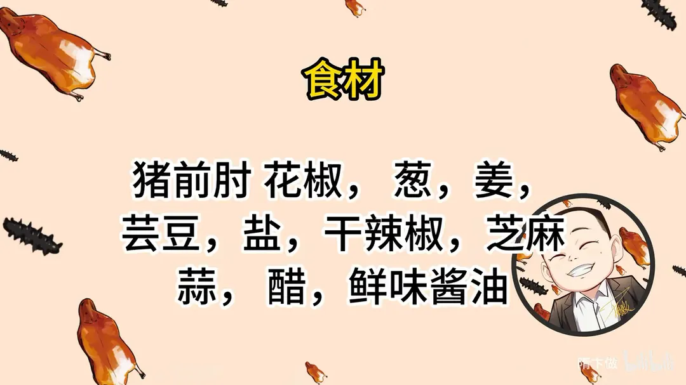
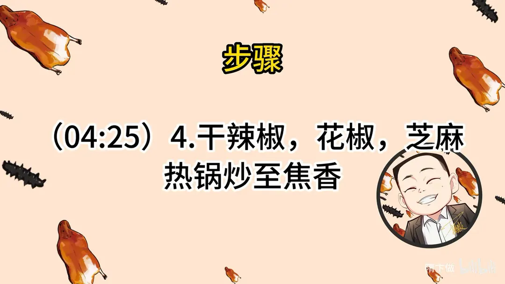

东坡肘子
隋卞一做。整只猪前肘先用灶火燎皮，再焯水去腥，换砂锅慢炖一百分钟至软烂脱骨，配干辣椒花椒芝麻炒香的蘸水。
原视频：https://www.bilibili.com/video/BV1rDZiYoEn3
食材
猪前肘、花椒、芸豆 等 11 样
| 类别 | 用料 | 用量 |
|---|---|---|
| 主料 | 猪前肘 | 适量 |
| 辅料 | 芸豆 | 适量 |
| 香料 | 花椒 | 适量 |
| 香料 | 干辣椒 | 适量 |
| 香料 | 芝麻 | 适量 |
| 香料 | 葱 | 适量 |
| 香料 | 姜 | 适量 |
| 香料 | 蒜 | 适量 |
| 调料 | 盐 | 适量 |
| 调料 | 醋 | 适量 |
| 调料 | 鲜味酱油 | 适量 |
步骤
- 燎皮：用筷子把猪肘串起来，用灶台火焰的外部燎，不用担心烤焦。
- 刮洗片开：温水冲洗后，刮去黑色焦化层，将猪肘在中间片开，有助于入味。
- 焯煮：准备铁锅，加入没过猪肘的适量冷水，加十几粒花椒、两三块葱姜，煮开后漂去冒出来的浮沫，煮至用筷子可以扎透、不冒血水即可。
- 换砂锅：换上砂锅，加两勺高汤（没有可不放），加一块葱姜、一粒花椒、盐、味精。
- 炖至软烂：煮大约 100 分钟，肘子煮至软烂脱骨，再次确定味道，撒香葱即可。
- 炒料：干辣椒、花椒、芝麻热锅炒至焦香。
- 调蘸水：炒香的料捣碎，放入葱末蒜末，浇上热油，加香味酱油、米醋，做成蘸水。
讲解要点
难度：★★☆☆☆（手法不难，难在耐住火——炖足一小时四十分钟，全程小火不让汤熬干）
为什么这么做
- 买前肘而不买后肘：前肘瘦肉稍多、筋多皮厚，炖完软糯而不油；后肘肥肉多，适合爱吃肥的。
- 先用明火燎皮：皮一收紧，藏在毛囊里的毛就冒出来了，顺手把皮里的骚味一起烧掉；温水泡过再刮掉焦化层，皮色变金黄。
- 侧面片一刀、肉厚处再划两刀：整只肘子外紧内实，不开口子，外面的盐和汤很难进到芯里。
- 冷水下锅焯足半小时：从冷到热把血水一点点逼出来，撇净浮沫，腥味才去得干净；用筷子扎不冒血水就说明可以换锅了。
- 换砂锅、小火慢炖：砂锅聚热匀、保温好，小火保持汤面微滚，肉才烂而不散。
- 一开始就放盐：微火久炖时盐味会慢慢渗到肉里，吃着里外都香；等到最后再放，味只停在表面，嚼着没有回味。
- 最后只留一块葱姜、一粒花椒：焯水时料已经给足，这里只是中和残留的一点腥味；一粒花椒就够，多了汤就发麻。
容易翻车
- 燎皮别怕黑，燎不透毛根出不来；但泡完一定要把焦化层刮干净，否则发苦。
- 水开后必须转小火，火大了汤先熬干、肉还没烂。
- 砂锅里的水留出一指距离就够了，水太多味淡。
- 煮的时间以筷子扎透不冒血水为准，时间不足肘子不离骨。
- 蘸水的干辣椒、花椒要焙干炒香但不能炒糊，糊过头就是苦味。
原片尾卡


原片文案
AI 字幕校准稿
今天教你们一个硬菜，特别好做，也特别有名——东坡肘子。买猪肘子要买前肘，前肘稍微瘦一点；愿意吃肥的，您就得买后肘。
第一步先检查一下有没有毛。今天买的肘子还真干净，一根毛都没有。不过这么看有可能看不出来，咱们可以拿火燎一下：肉皮一发紧，有毛就能滋出来。
怕你们在家不会弄，我教一下：找两根筷子，一定是一边一根插进去，一会儿便于翻转。用火焰的外部燎就行，没关系，不要怕火。而且在烧的过程当中，还会把皮里边那点骚味烧得很干净。烧到这个黑不溜秋的颜色就行了，然后放到温水里泡一下，泡完拿刀刮。燎完之后有一层焦化层，把焦化层刮掉就可以了。你看刮完这个地方就是金黄金黄的颜色，一会儿再洗一遍就行了。
洗干净的肘子从侧面片一刀，便于入味；里边那个大肉块的地方再划两刀。然后下锅：锅里烧水，加十几粒花椒、加点葱姜，把肘子放进去，冷水下锅就行了。这一步是为了把肘子多余的血水还有异味漂干净，上面的一些浮沫给它撇一撇。烧开锅之后煮到什么程度呢？估计最快也得半小时，拿筷子一扎不冒血水就可以了。
肘子煮了有半个小时，拿筷子插一下，没有血水了，捞出来。我换个砂锅，搁在砂锅里煮，小火慢炖。里边加两勺高汤，家里没有的可以不放，水留上一指的距离就行。加上泡过的芸豆，加一块葱、一片姜就行了。刚才煮肘子的时候料已经加得很足了，这一点葱姜只是中和一下味道，去掉它残留的那么一丢丢腥味。可以放一粒花椒，就一粒。别看这一粒花椒，你最后尝这个汤的时候，真的会有那么一点点复合的香味；花椒真不敢放得太多，一粒就够了，我研究过的。
水开了之后就要转小火，我们要放点盐。有同志说先放盐熟得慢，您听我的：在慢火的微炖下，这个淡淡的盐味会渗到肉里面去，所以吃着里外都香。最后再放盐，那味儿只停留在肉的表面，吃着没有回味，里边还是不好吃。这会儿就要关小火了，然后盖上盖，一定要小火，火太大，没等肘子熟，您这汤就熬没了。
趁着旁边肘子煮着的时候，咱们做一个蘸水。干辣椒表面别焙糊了，闻着有香气了就可以了，放旁边晾一晾。再来点花椒，一定要焙干，再炒点芝麻，芝麻一样，肯定是炒完了的香。把煸干的辣椒捣碎，花椒搁三分之一，来点蒜末、小葱，搭配点颜色，烧点热油浇在上面，来点醋，撒上芝麻，多来点，很香。
肘子也煮好了，端出来开盖。来，隋坡做的东坡肘子，软烂咸香，是一种享受。它都化了，这个皮都不用嚼，在嘴巴里面唰一下就滑掉了。猪肉本身油脂的香，加上高汤的那种香味，是复合的、交融的，两个汤的香味融为了一体。包括猪皮里的胶原蛋白，使得这个汤喝到嘴里有点挂口的感觉，很浓香。你看这个汤都起皮了，证明里面的油脂特别高，汤也够香、够鲜。
我再吃口肉，蘸个蘸水。你要说不享受，我倒不信，你看把我那兄弟给馋的流哈喇子了。这个蘸水绝就绝在辣椒炒到火候，它有那种一点点的糊，有过烹饪经验的朋友都知道，像这种程度是最好吃的。然后胡辣味、麻味，回口有醋的那种香，还有芝麻的那种香。我觉得这个蘸料拌拖鞋都好吃。它很好做，真的很好做。
我告诉你几个关键点，只要你把控好了，这道菜就很好做。